Мічення (Tagging)
8.1 Toothfish and Skate Tagging Manual, версія 2025
EN - Toothfish and Skate Tagging Manual 2025.docx
↗ Відкрити
⬇ Завантажити
Програма мічення CCAMLR впроваджена в 2007 р.; станом на 2023 р. у районі дії Конвенції позначено 404 559 клича (повернуто 49 270, тобто 12%) та 71 444 скатів (повернуто 2 444, тобто 3%). Понад 98% повторних виловів вдається пов'язати з початковим міченням.
Підготовка до рейсу
- Мітки CCAMLR (партіями по 1000 шт., замовляються через Секретаріат), рекомендовано 2 апарати для мічення на партію.
- Апаратор і голки в справному стані, запасні частини й засоби для чищення.
- Сачки для підйому риби та люльки (cradles).
- Робоча станція: вимірювальна дошка, придатний накопичувальний резервуар.
Стандартні операційні процедури мічення
- Тримати станцію мічення готовою протягом усього періоду виборки.
- Готувати підйомне спорядження заздалегідь (без використання багра-гафа).
- Приймати рішення про мічення конкретної риби ще до її підйому на борт.
- Виміряти стандартну й загальну довжину.
- Встановити мітки, перевірити кріплення легким натягом, записати й перевірити номери.
- Обережно випустити рибу назад у воду головою вперед.
- Записати номер виборки, долю риби та координати випуску (з містка).
Загальний час поза водою — не більше 3 хвилин. Використання накопичувального резервуара — мінімізувати.
Критерії непридатності до мічення — клич
| № | Критерій |
|---|---|
| 1 | Гачкове ушкодження присутнє будь-де, крім ротової області |
| 2 | Зябра рожеві або білі |
| 3 | Видима кровотеча зябер або надмірна кровотеча будь-де на тілі |
| 4 | Видиме пошкодження тіла з відкритими ранами |
| 5 | Видиме пошкодження ока або проникнення в порожнину тіла (зокрема ракоподібними — бокоплавами/вошами) |
| 6 | Стирання або втрата луски на площі, що дорівнює або перевищує площу хвоста риби |
| 7 | Не виявлено рухової активності риби |
Критерії непридатності до мічення — скати
| № | Критерій |
|---|---|
| 1 | Зламана щелепа або значний розрив тканини навколо рота |
| 2 | Білі або кровоточиві зябра на дорсальній чи вентральній поверхні |
| 3 | Пошкодження від вошей |
| 4 | Видимий пролапс значної частини кишківника або кровотеча |
| 5 | Травма ока або дихальця (spiracle) |
Техніка встановлення мітки
- Клич: мітку вводять під кутом у другий спинний плавець так, щоб Т-подібний стрижень зафіксувався за променями плавця, вістрям назад; після встановлення — легкий натяг для перевірки кріплення.
- Скати: одна мітка в м'яз кожного крила з боку очей, вводиться прямовисно між променями плавця.
Накопичувальні резервуари (специфікація)
- Розмір: щонайменше вдвічі більший за середню довжину риби (від 2 м).
- Гладкі стінки, бажано округла форма, високий потік чистої морської води.
- Об'єм риби не повинен перевищувати 10% об'єму води в резервуарі; клич і скатів тримати окремо.
Повторний вилов (recapture)
- Будь-яку мічену рибу передають спостерігачу для відбору проб (тип III — довжина, стать, стадія зрілості, вага, отоліти).
- Обов'язкове фото мітки in situ на фоні фірмового шаблону-лінійки CCAMLR з читабельним номером.
- Фізичні мітки повертати Секретаріату більше не потрібно — досить якісного фото; фізичні мітки знищуються на борту.
- Щорічний приз від COLTO (Coalition of Legal Toothfish Operators) за знайдені мітки.
8.2 Ілюстрації з посібника з мічення (35 зображень)
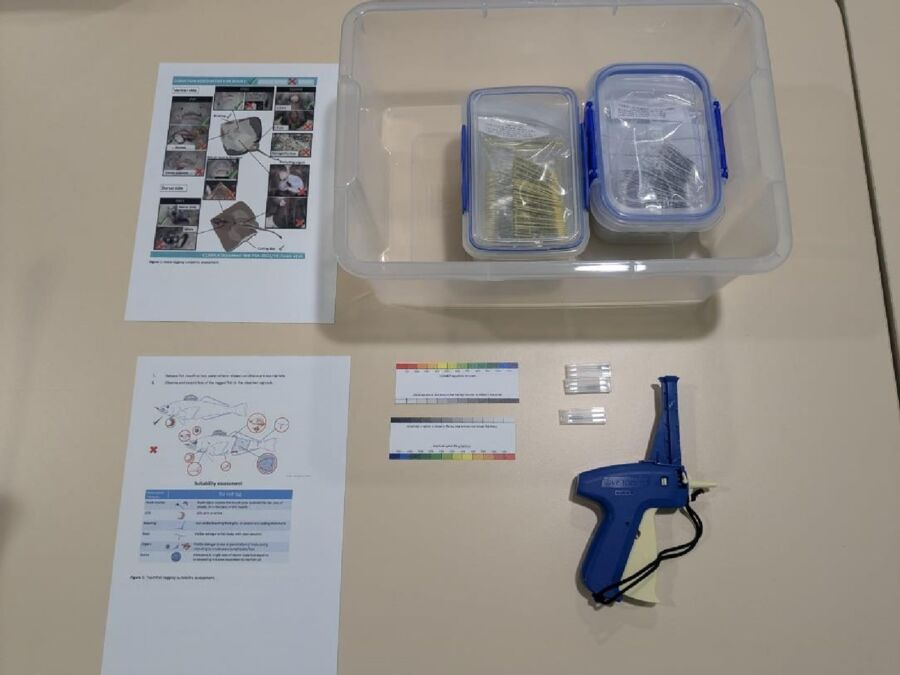
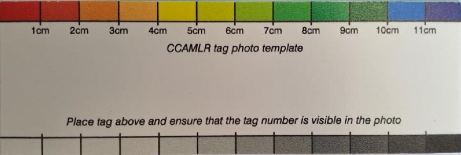
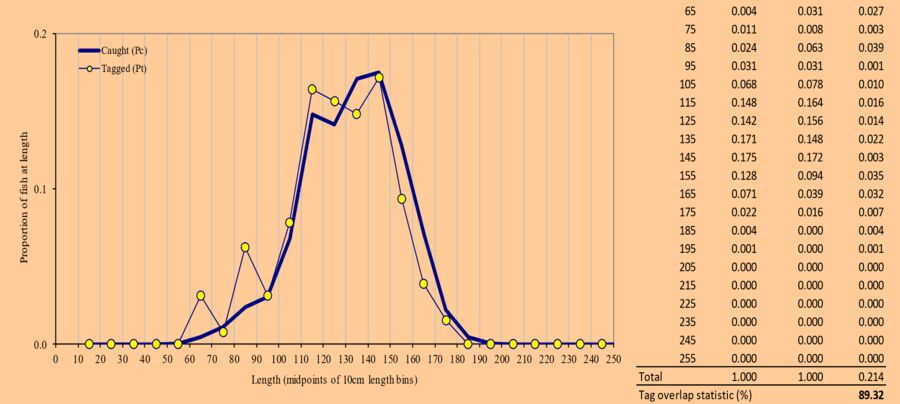
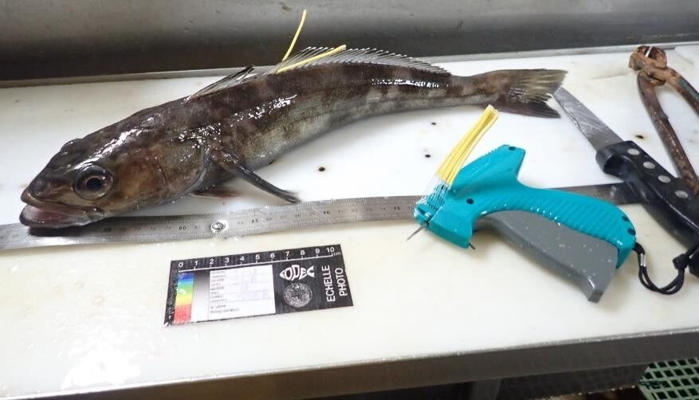
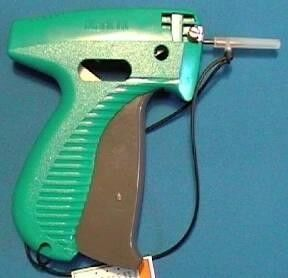
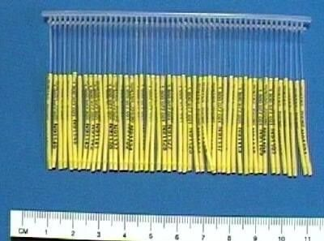
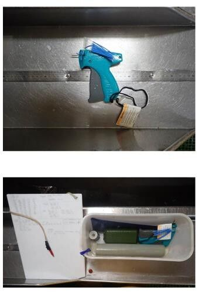
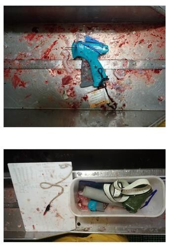
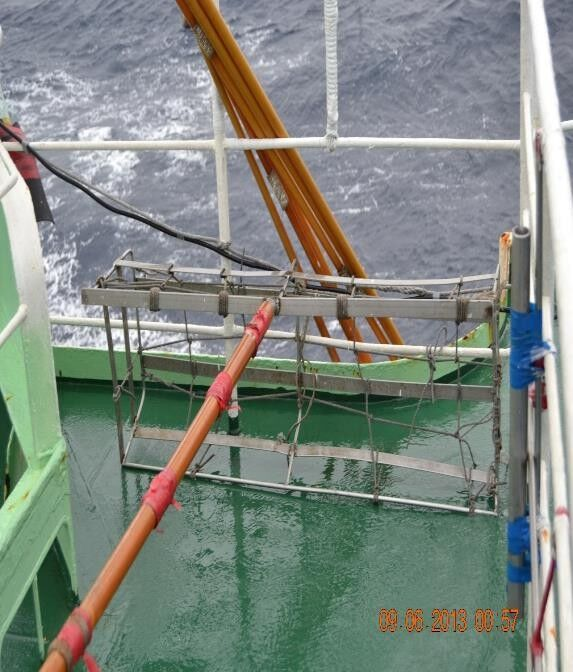
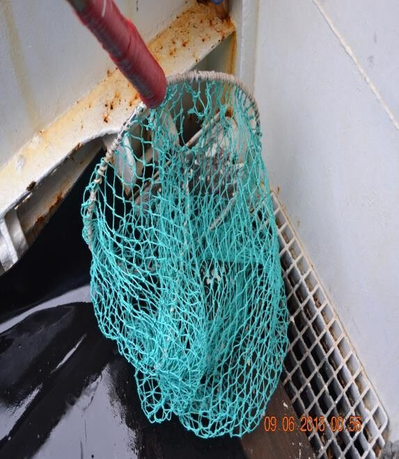
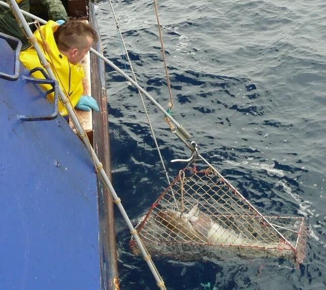
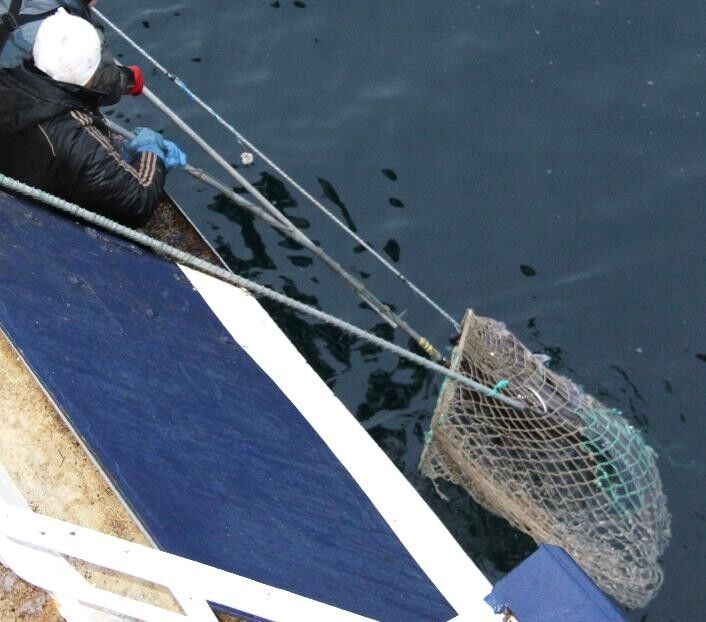
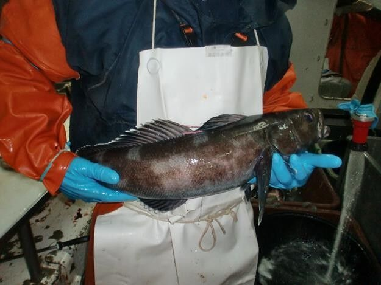
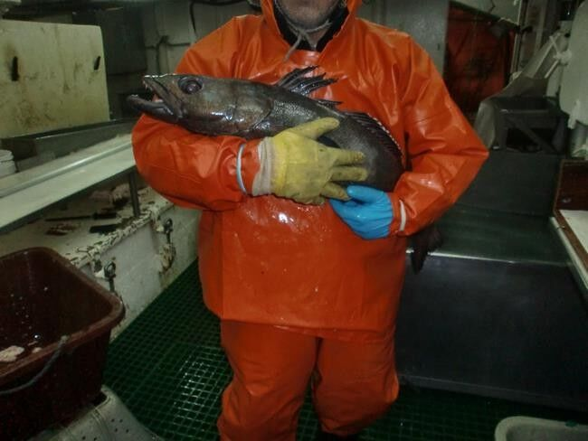
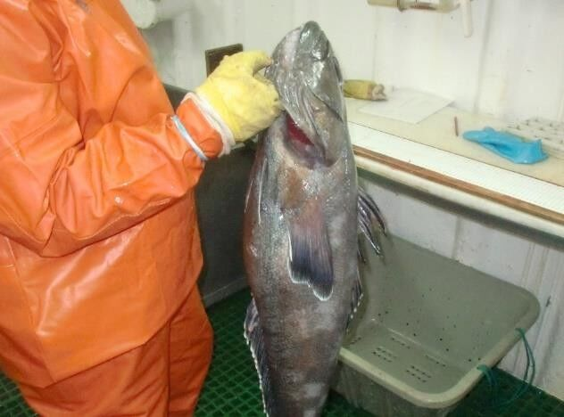
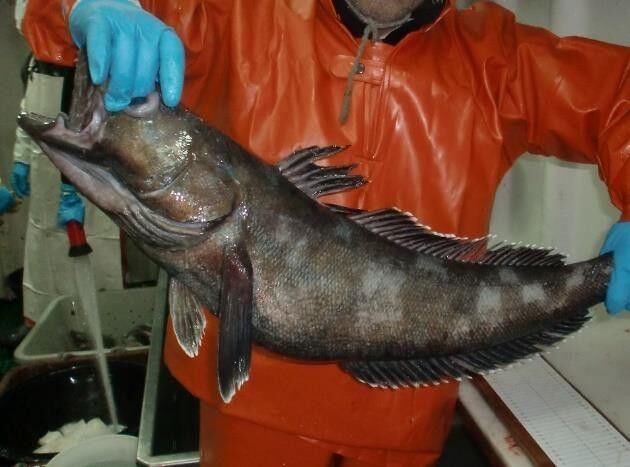
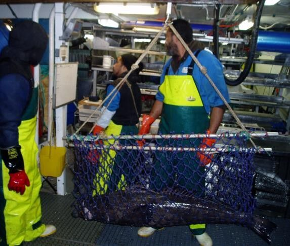
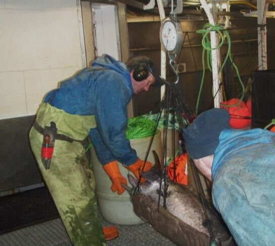
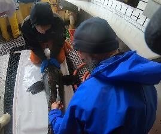
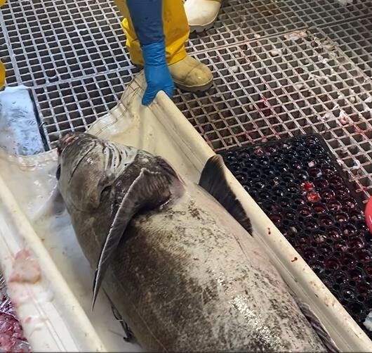
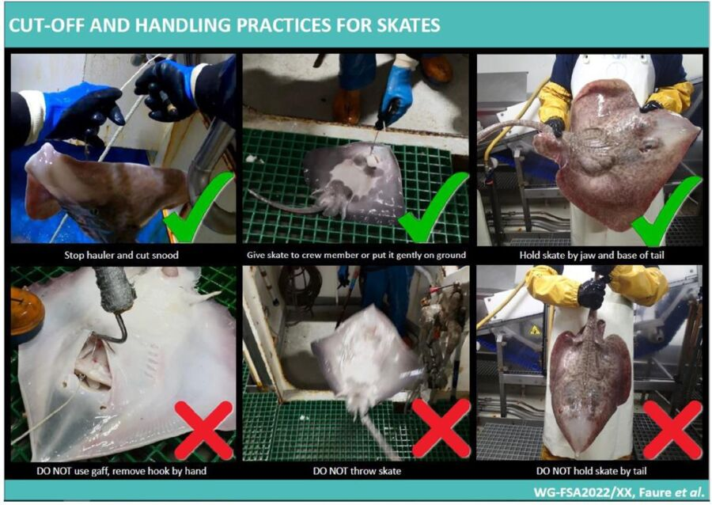
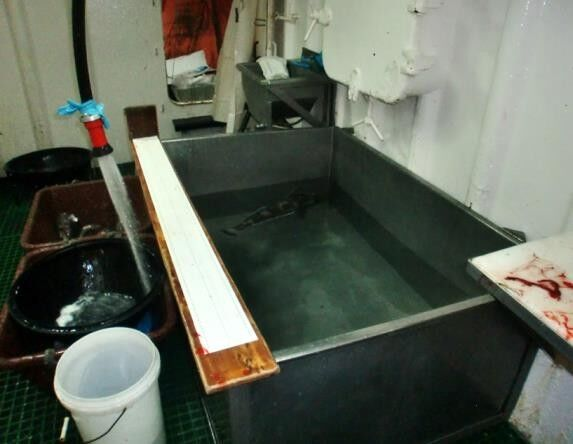
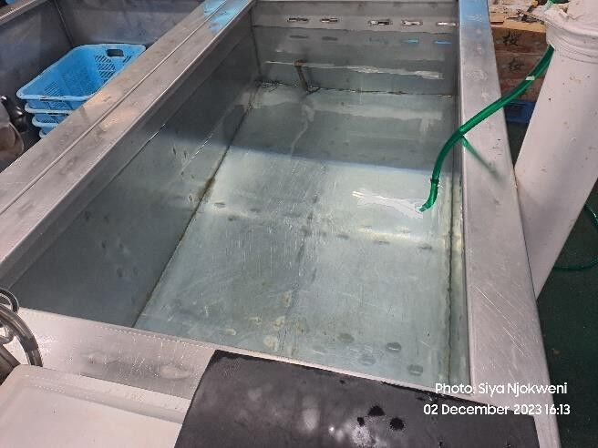
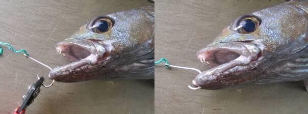
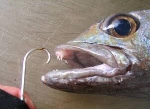
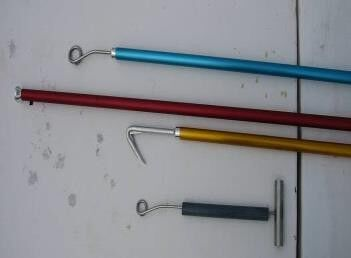
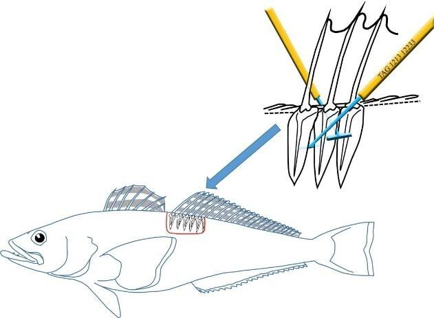
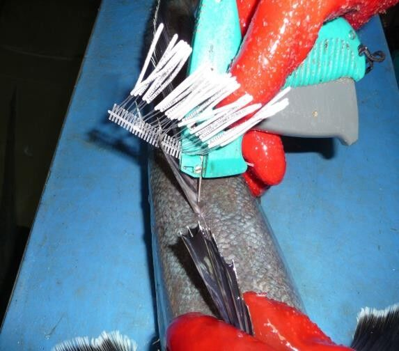
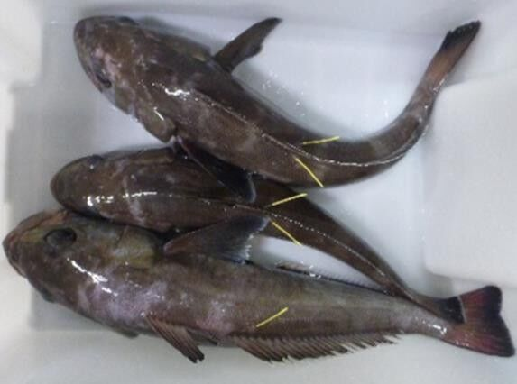
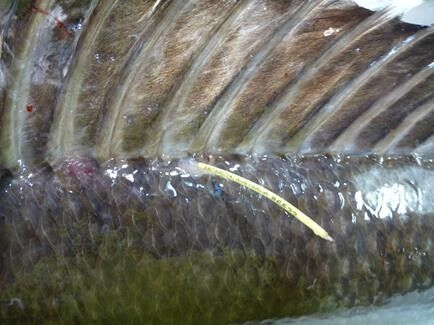
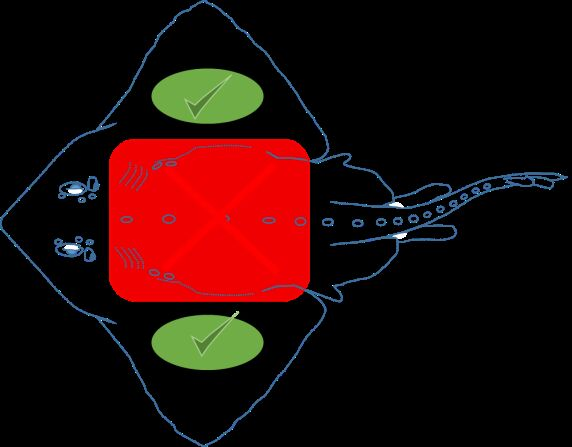
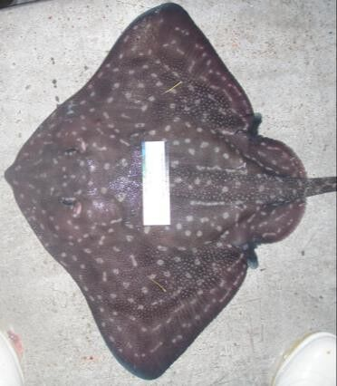
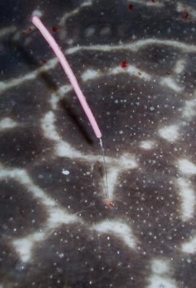
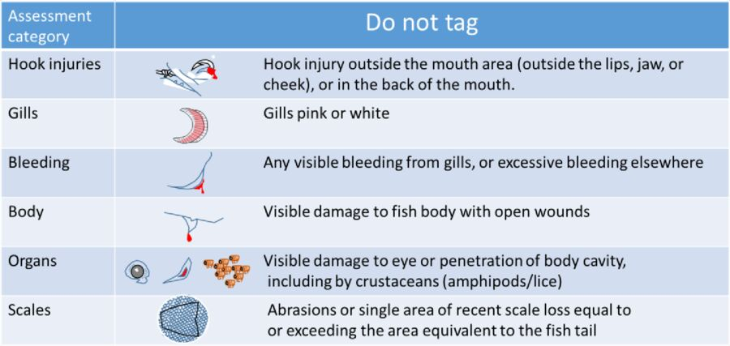
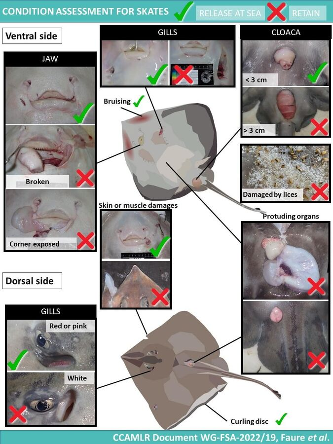
8.3 Опитування щодо процедур мічення на судні
e-tagging procedures-2020.docx
↗ Відкрити
⬇ Завантажити
Коротке опитування (2020 р.) для суден щодо фактичних процедур мічення клича, з проханням надати фото/відео процесу.
| Блок | Питання |
|---|---|
| Розташування станції мічення | На палубі (відкрито) / на палубі (під накриттям) / у цеху / інше |
| Обслуговування пристрою для мічення | Частота чищення/обслуговування апарата |
| Вертикальні відстані | Від поверхні води до зони виборки; від точки випуску до поверхні води; відстань до станції мічення |
| Накопичувальний резервуар | Наявність (Т/Н), об'єм (л), форма, наявність проточної води |
| Обладнання для підйому великої риби | Сітка / ноші чи люлька / інше; мінімальна довжина риби для використання підйомного обладнання |
| Транспортування риби | Спосіб перенесення між зоною виборки і станцією мічення |
| Запис даних мічення | Прямо в комп'ютер / паперовий бланк / водостійка дошка |
| Засоби випуску риби | Люлька, жолоб, інше |
| Відповідальність за мічення | Екіпаж / спостерігач(і) / комбіновано; кількість навченого екіпажу; мова навчання |
| Оцінка придатності риби | Використання протоколу й критеріїв придатності CCAMLR (Т/Н) |